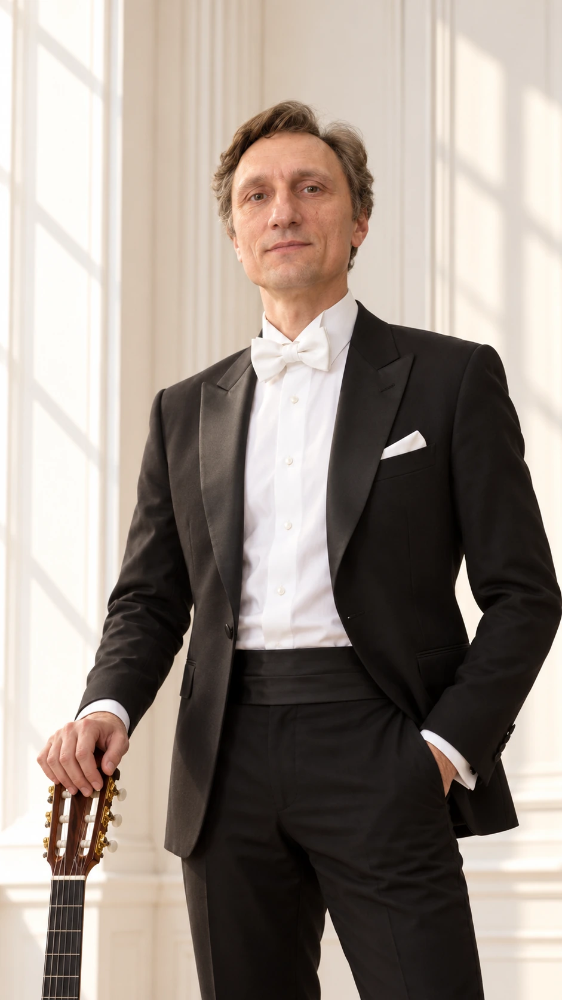
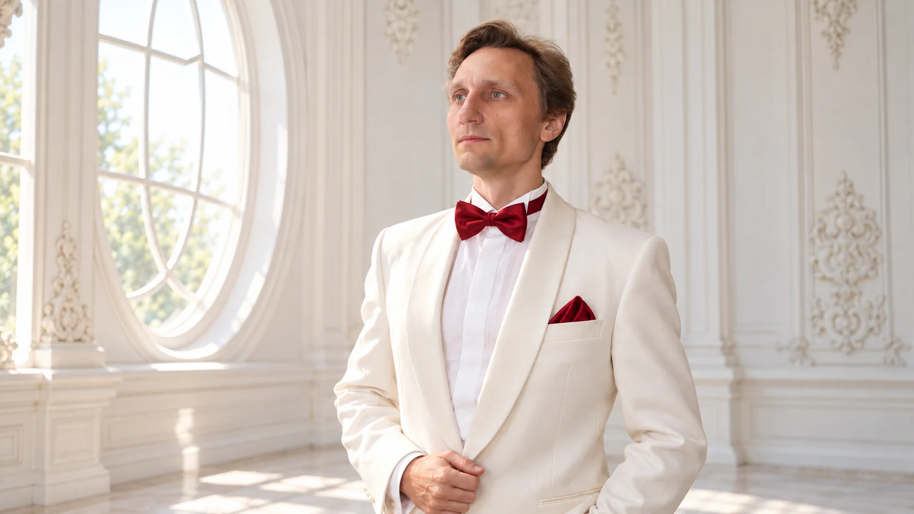
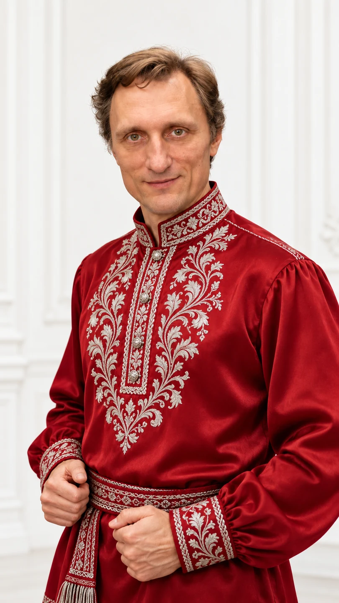
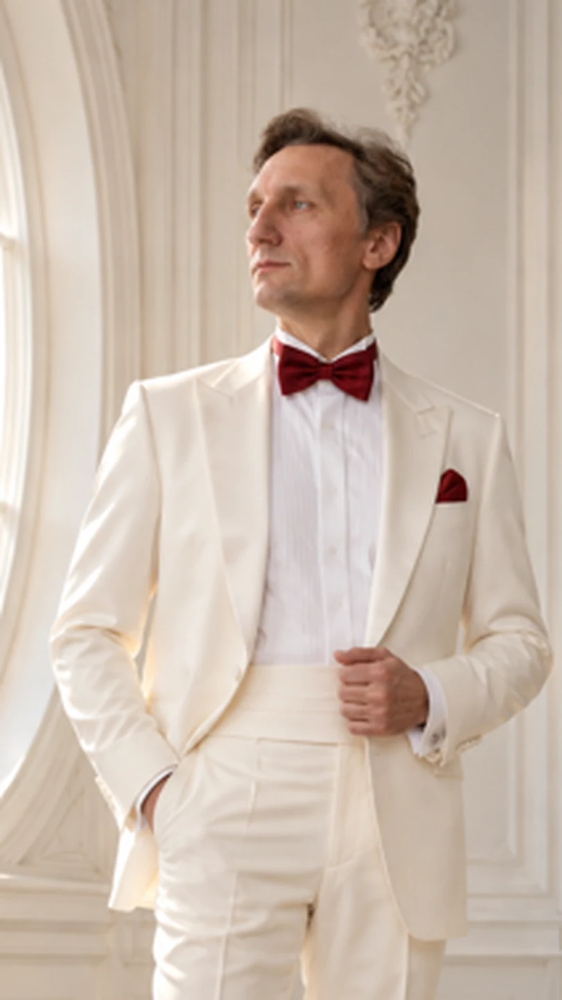

Классическая эстрада
Песни эстрады
Популярные песни и мелодии отечественной эстрады.
Классическая опера, русский романс и музыка, которая говорит с сердцем. От камерного вечера до большой концертной сцены.


Более двух десятилетий на оперной и концертной сцене.
Лев Красовицкий — тенор, выпускник Академического музыкального училища при Московской консерватории. Выступал в составе ансамбля «Мадригал», работал в Московском детском музыкальном театре имени Н. Сац, участвовал в европейских и американских гастрольных проектах.
В его творческой палитре — оперные арии, классические романсы и популярная музыка.
Подробнее об артисте ↗Лев Красовицкий в составе международной постановки Деклана Доннеллана по Пушкину. Совместный проект с участием Дмитрия Дюжева, Евгения Миронова и других известных артистов; гастроли спектакля в Европе и Латинской Америке.
Камерные и концертные программы продолжительностью около одного часа. Под сопровождение гитары, фортепиано или фонограммы.

Популярные песни и мелодии отечественной эстрады.

Песни народной традиции в концертном исполнении.

Известные арии классического оперного репертуара.
Даты следующих концертов будут опубликованы после подтверждения. Для приглашений и информации о выступлениях свяжитесь с артистом.
Избранные портреты и материалы концертного репертуара.
Две видеозаписи из архива артиста.
Запись из предоставленного видеоархива. Название произведения и дата уточняются.
Запись из предоставленного видеоархива. Название произведения и дата уточняются.
Концертная видеозапись.
Лев Красовицкий и концертный хор Давидовой пустыни «Держава» под руководством регента Ильи Мельникова. Сборник «Русь». Продолжительность 3:22.
Слушать запись ↗Прослушивание открывается на странице музыкального сервиса. Встроенный аудиофайл не предоставлен.
Пресса, рецензии и архивные афиши разных лет.
Материал о концерте, посвящённом Георгию Свиридову, с упоминанием выступления Льва Красовицкого.
Читать публикацию ↗Публикация о концертном исполнении музыки из «Евгения Онегина» и партии Ленского.
Читать публикацию ↗